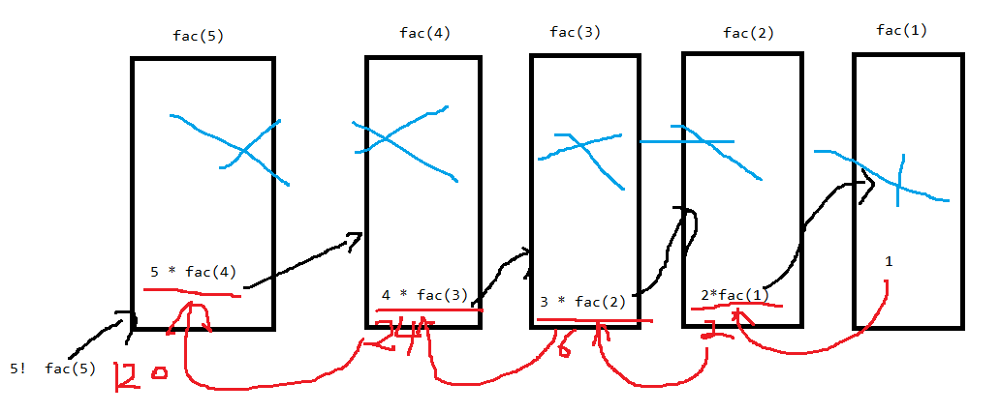

复习
函数 ：
什么是函数？
定义 ： function 表达式定义
函数的参数 ：
函数的返回值：return
变量的作用域 ： 全局 局部
1、函数的实参副本 arguments
使用：
1、必须使用在函数体中
2、是一个对象
3、当参数个数不确定时，可以使用arguments来接收所有的实参
4、通过arguments[下标] 取出实参数据 下标从0开始
5、arguments值的变化也会影响形参（局部变量）值的变量
2、同名函数
程序中出现两个名字相同的函数，只有最后一个有效
3、函数的递归调用
递归调用 ： 函数自己调用自己
100！ = 100 * 99 ！
99！ = 99 * 98！
98！ = 98 * 97！
fac(n) = n * fac(n-1)
。。。
1! = 1
递归的本质 ： 实现 循环
缺点 ： 占用内存资源
递归的内部实现：

思考 ：
递归实现 ：
计算1--100的和
输出 10个 hello
输出斐波那契数列的前10项 ：
斐波那契数列 ： 第一项是0 第二项是1 后面每一项都是前面两项的和
0 1 1 2 3 5 8 13 ...
4、函数和事件的关系
5、事件的三要素
事件源: 是一个名词，静态的事物 ， 操作对象
事件 : 是一个动词， 动作， onclick
事件处理程序 : 实现的效果 一般是一个函数
6、常见事件有哪些？
页面事件：
onload 页面加载事件 （页面打开后执行）
onunload 页面卸载事件（页面关闭时执行）
鼠标事件：
onclick 单击
ondblclick 双击
onmousedown 按下
onmouseup 抬起
onmouseover 移入
onmouseout 移出
onmouseenter 移入
onmouseleaver 移出
onmousemove 移动
oncontextmenu 右键单击
键盘事件：
onkeyup 抬起
onkeydown 按下
onkeypress 按下 + 抬起
其它事件（一般用于表单）
onsubmit 表单提交事件（一般用于表单验证）
onchange 改变 （一般用于下拉列表）
onblur 失去焦点
onfocus 获取焦点
事件用法：
事件源.事件 = function(){
事件处理程序
}
7、页面加载事件
1、一个程序中有且只有一个onload ，如果有多个，只有最后一个有效
2、onload中的代码执行顺序 ： 在页面所有内容（html、css、js）全部加载完成后才执行
3、如果script标签写在body的上面，js查找对象的代码 一定要写在onload中，否则会抄不到页面元素对象。
4、通过function 定义的函数 不能写在onload中
8、事件处理程序 操作效果
操作样式 :
对象.style.样式名 = 值 只有两种情况 ： 变量 或 字符串 "red" "12px"
样式名：小驼峰写法 backgroundColor fontSize
获取样式值 ：对象.style.样式名 （写在style标签内的像素值不能获取，只能获取行内样式值）
操作属性（操作的标签的属性） :
对象.属性 = 值 设置属性
对象.属性 获取属性
操作内容 :
对象.innerHTML = "内容" 设置内容
对象.innerHTML 获取内容
表单内容操作 ：
对象.value = 值
9、事件绑定
1、可以写在 标签上 <input onclick = ''>
2、可以写在script内部
<script>
对象.事件 = function(){
}
</script>